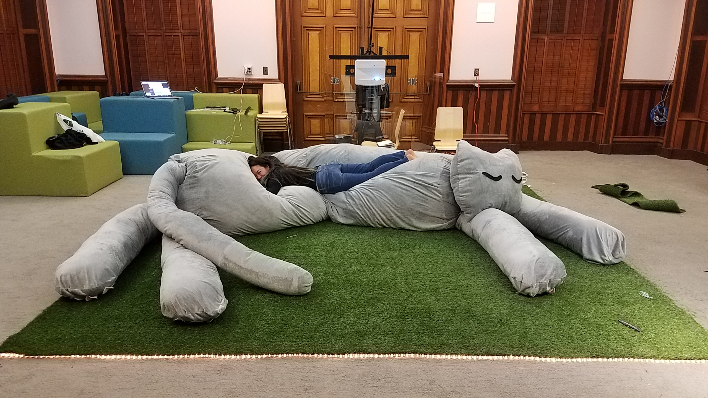

Concept
The purpose of the grant was to create art that could help make babies and children school-ready. I designed a multi-layered experience that engaged the developing senses of babies, the playfulness of children, and the emotional development of their caretakers.
The piece features a 20-foot stuffed cat, motion-reactive projected visuals, and music that changes depending on a visitor's position in the space.
Process

Using the XBox Kinect to create motion-reactive visuals in the Unity game engine

The giant cat was inspired by the work of childhood psychologist DW Winnicott. He theorised that our childhood relationships to soft toys deepen our relationships to reality and ourselves, and prepare us to be emotionally mature adults.
It is meant to remind adults of what it was like to be small, and to have a stuffed companion. Young visitors have enjoyed climbing over the cat and cuddling with it while watching the projection. Some children have spent over an hour with the cat.

Imagery in the projection tells the story of twenty-something reconnecting with their childhood selves.
Home